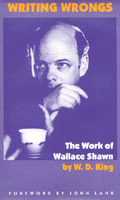

A rare insight into the life and literary work of actor and playwright Wallace Shawn
A rare insight into the life and literary work of actor and playwright Wallace Shawn


 A rare insight into the life and literary work of actor and playwright Wallace Shawn
A rare insight into the life and literary work of actor and playwright Wallace Shawn

|  |
Writing WrongsThe Work of Wallace ShawnW. D. King, foreword by John Lahrcloth EAN: 978-1-56639-517-5 (ISBN: 1-56639-517-8) |
"King's critical method here is exemplary: the focus stays on the play-text but various revealing contexts are brought to bear, including, in almost every case, production history. Shawn's plays challenge or test the liberal values of the audience and of the institution of theatre, pushing to its limit the conflict between freedom and authority. King's analysis of this conflict is lucid and persuasive, brilliantly illuminating what are surely among the darkest texts in modern drama. W.D. King is a gifted critic and a superb writer, and Writing Wrongs is a work of exceptional critical intelligence and originality."
—Una Chaudhuri, Chair, Department of Drama, Tisch School of the Arts, New York University
Wallace Shawn usually appears in our mind's eye as the consummate eccentric actor: the shy literature teacher in Clueless, the diabolically rational villain in The Princess Bride, or as the eponymous protagonist of Vanya on 42nd Street. Few of us realize, however, that Shawn is also one of today's most provocative and political playwrights.
Writing Wrongs: The Work of Wallace Shawn is a close and personal look into the life and literary work of the man whom Joseph Papp called "a dangerous writer." As the son of the late William Shawn, renowned editor of The New Yorker, Wallace Shawn was born into privilege and trained to thoroughly liberal values, but his plays relentlessly question the liberal faith in individualism and common decency. In an uncompromising way that is all his own, Shawn registers the shock of the new.
In works such as Aunt Dan and Lemon, My Dinner with André, and The Designated Mourner, he wrenches out of place all of the usual, comfortable mechanisms by which we operate as audiences. Perhaps our discomfort and struggle to understand a play might provoke some change in the way we see ourselves and behave in relation to others—but Shawn offers little in the way of solace.
W.D. King's incisive critiques of the plays and inquiry into the life and times of their author develop a portrait of Shawn as a major figure in contemporary theater.
"Writing Wrongs is an eloquent book, giving an important and neglected playwright his due. Wallace Shawn is almost alone among contemporary American playwrights: His work is morally engaged without being sanctimonious, political without being didactic, graphic without being vulgar. He confronts us with our hypocrisies, glib opinions, and blind habits, then encourages us to face unanswerable questions—about ethics, religion, sex, and privilege. Many of Shawn's characters are marvelously fluent, but the most theatrical moments of his plays are silent and halting—when a besieged character cannot rely on his or her usual way of thinking and must devise a new, more personal response to the world.
"W.D. King is sensitive to all of these aspects of Shawn's theatre. In what is the only book-length study of Shaw, King places him in the context of his culture and provides lucid interpretations of the major plays and films. King is a confident writer, beckoning the reader to follow along as he makes provocative connections between, say, My Dinner with Andr� and Sartre; The Fever and Euripides; Aunt Dan and Lemon and Freud, O'Neill, and Shoah. The range of reference always brings the reader back to the texts with a refreshed and buzzing mind."
—Marc Robinson, Yale School of Drama
Series Foreword – Robert Dawidoff
Foreword – John Lahr
Introduction: "On the Way to Balducci�s"
1. Early Writings: Four Meals in May and The Old Man
2. The "Plays": The Hotel Play, The Family Play, and The Hospital Play
3. "Inside Your Thing, But I�ll Do It Quickly": Our Late Night, In the Dark, and A Thought in Three Parts
4. "A Powerful Smell of Urine": Marie and Bruce, The Mandrake, and The Music Teacher
5. "In the Way in Relation to Others": My Dinner with Andr�
6. Beyond "A Certain Chain of Reasoning": Aunt Dan and Lemon
7. "A Piece—Of a Human Brain": The Fever
Epilogue I: "A Genuine Family Drama": Vanya on 42nd Street
Epilogue II: "I can�t...just...I can�t...totally": The Designated Mourner
Appendix: The Man behind the Voice: Interview of Wallace Shawn by Mark Strand
Notes
Bibliography
Index
 | William Davies King is Associate Professor of Dramatic Art at the University of California, Santa Barbara, and the author of Henry Irving's "Waterloo": Theatrical Engagements with Arthur Conan Doyle, George Bernard Shaw, Ellen Terry, Edward Gordon Craig, Late-Victorian Culture, Assorted Ghosts, Old Men, War, and History, which won the 1993 Joe A. Callaway Prize for Best Book on Theatre. |
General Interest
Literature and Drama
American Subjects, edited by Robert Dawidoff.
The American Subjects series, edited by Robert Dawidoff, will introduce readers to unfamiliar areas or figures in American culture. All of the titles in this series will be the first on their particular subject. Each will tell an unfamiliar story and will emphasize the cultural side of how Americans have lived and what they have created or thought.
© 2015 Temple University. All Rights Reserved. This page: http://www.temple.edu/tempress/titles/1328_reg.html.